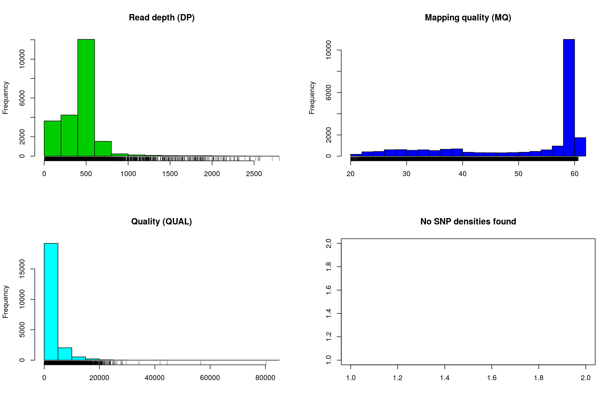

Surveying a genome with chromR
Genomic projects frequently incorporate several types of data. For example, the reference sequence may be stored as a FASTA format file, variants (SNPs, indels, etc.) may be stored in a variant call format (VCF) file while annotations may be stored as a GFF or BED format (tablular data). Genome browsers can be used to integrate these different data types. However, genome browsers typically lack a manipulation environment, they simply display existing files. The R environment includes a tremendous amount of statistical support that is both specific to genetics and genomics as well as more general tools (e.g., the linear model and its extensions). The R package vcfR provides a link between VCF data and the R environment and it includes a simple genome browser to help visualize the effect of manipulations. Here we explore how we can use vcfR to survey genomic data for interesting features.
Creating chromR objects
In this example we will begin by locating the example data from the pinfsc50 package. This is a separate package from vcfR that you will need to install. If you haven’t installed it already, you can install it with install.packages('pinfsc50'). For data from your own research activities you may wany to omit the system.file() steps and directly use your filenames in the input steps.
library(vcfR)
# Find the files.
vcf_file <- system.file("extdata", "pinf_sc50.vcf.gz", package = "pinfsc50")
dna_file <- system.file("extdata", "pinf_sc50.fasta", package = "pinfsc50")
gff_file <- system.file("extdata", "pinf_sc50.gff", package = "pinfsc50")
# Input the files.
vcf <- read.vcfR(vcf_file, verbose = FALSE)
dna <- ape::read.dna(dna_file, format = "fasta")
gff <- read.table(gff_file, sep="\t", quote="")
# Create a chromR object.
chrom <- create.chromR(name="Supercontig", vcf=vcf, seq=dna, ann=gff, verbose=TRUE)## Names in vcf:## Supercontig_1.50## Names of sequences:## Supercontig_1.50 of Phytophthora infestans T30-4## Warning in create.chromR(name = "Supercontig", vcf = vcf, seq = dna, ann = gff, :
## Names in variant data and sequence data do not match perfectly.
## If you choose to proceed, we'll do our best to match the data.
## But prepare yourself for unexpected results.## Names in annotation:## Supercontig_1.50## Initializing var.info slot.## var.info slot initialized.Note that a warning message indicates that the names in all of the data sources do not match pefectly. It has been my experience that this is a frequent occurrence in genome projects. Instead of asking the user to create duplicate files that have the same data but standardized names, vcfR allows the user to exercise some judgement. If you see this message and feel the names are correct you can ignore this and proceed. In this case we see that a chromosome is named ‘Supercontig_1.50’ in the VCF data but named ‘Supercontig_1.50 of Phytophthora infestans T30-4’ in the FASTA (sequence) file. Because we know that for this specific project these are synonyms we can safely ignore the warning and proceed.
Once we have created our chromR object we can verify that its contents are what we expect. By executing the object’s name at the console, with no other arguments, we invoke the object’s ‘show’ method. The show method for chromR objects presents a summary of the object’s contents.
chrom## ***** Class chromR, method Show *****
## Name: Supercontig
## Chromosome length: 1,042,442 bp
## Chromosome labels: Supercontig_1.50 of Phytophthora infestans T30-4
## Annotation (@ann) count: 223
## Annotation chromosome names: Supercontig_1.50
## Variant (@vcf) count: 22,031
## Variant (@vcf) chromosome names: Supercontig_1.50
## Object size: 22.5 Mb
## Use head(object) for more details.
## ***** End Show (chromR) *****There at least two ways to graphically view the chromR object. The first is plot() which plots histograms of some of data summaries.
plot(chrom)
The read depth here is a sum over all samples. We see a peak that represents the depth where most of our genomes were sequenced at. Low regions of sequence depth may indicate variants where we may be concerned that there may not be enough information to call a genotype. Variants of high coverage may represent repetetive regions of genomes where the reference may not contain all the copies so the reads pile up on the fraction of repeats that were successfully assembled. These regions may violate the ploidy assumptions made by variant callers and therefore may be considered a target for quality filtering. Mapping quality is very peaked at 60 but also contains variants that deviate from this common value. Quality (QUAL) is less easily interpreted. It appears that most of our variants are of a low quality with very few of them being of high quality. It is important to remember that while everyone would like high quality, quality is frequently difficult to measure. The simplest interpretation here is that QUAL may not be a good parameter to use to judge your variants. The last panel for SNP densities is empty because this data is created during the processing of chromR objects, which we will discuss below.
chromoqc(chrom, dp.alpha = 66)
Our second plot, called chromo plot, displays the same information as the plot method only it distributes the data along its chomosomal coordinates. It also includes a representation of the annotation data. The contents of this plot are somewhat flexible in that it depends on what data is present in the chromR object.
Processing chromR objects
Creation and processing of a chromR object has been divided into separate tasks. Creation loads the data into the chromR object and should typically only be required once. Processing the chromR object generates summaries of the data. Some of these summaries will need to be updated as the chromR object is updated. For example, if the size of the sliding window used to summarize variant density and GC content is changed the chromR object will need to be processed to update this information.
chrom <- proc.chromR(chrom, verbose = TRUE)## Nucleotide regions complete.## elapsed time: 0.507## N regions complete.## elapsed time: 0.294## Population summary complete.## elapsed time: 0.208## window_init complete.## elapsed time: 0.001## windowize_fasta complete.## elapsed time: 0.189## windowize_annotations complete.## elapsed time: 0.011## windowize_variants complete.## elapsed time: 0.001plot(chrom)
Subsequent to processing, our plot function is identical to its previous presentation except that we now have variant densities. When we observe the chromoqc plot we see that we now have variant densities, nucleotide content as well as a representation of where in our reference we have nucleotides (A, C, G or T) or where we have ambiguous nucleotides.
chromoqc(chrom, dp.alpha = 66)The above data is an example of visualizing raw data that has come from a variant caller and other automated sources. In our section on quality control we presented methods on how to filter variants on various parameters as an attempt to omit low quality variants. We can use this data to create a chromR object and compare it to the above data.
#vcf <- read.vcfR("pinfsc50_qc.vcf.gz", verbose = FALSE)
vcf <- read.vcfR("pinfsc50_filtered.vcf.gz", verbose = FALSE)
chrom <- create.chromR(name="Supercontig", vcf=vcf, seq=dna, ann=gff, verbose=FALSE)
chrom <- proc.chromR(chrom, verbose = FALSE)
chromoqc(chrom, dp.alpha = 66)
We have a smaller quantity of data after our quality control steps. However, there do appear to be a few improvements. First, the read depth is now fairly uniform and lacks the large variation in depth we saw in the raw data. In genomics projects our naive assumption is that we would sequence all regions of the genome at the same depth. So this change in the data allows it to approach our expectation. Second, the mapping quality appear relatively constant and the variants with low mapping quality have been omitted. If we feel that ‘mapping quality’ is a reasonable assessment of quality, we may interpret this as an improvement. These are methods we feel improve the quality of our datasets prior to analysis.
Tabular summaries
When we process a chromR object, two forms of tabular data are created. First, summaries are made on a per variant basis. This includes sample size (minus missing data), allele counts, heterozygosity and effective size. Second, summaries are made on a per window basis. Window size can be changed with the win.size parameter of the function proc.chromR(). Window based summaries include nucleotide content per window (including missing data so you can adjust window size for analyses if necessary), the number of genic sites per window (when annotation information was provided) and the number of variants per window.
head(chrom@var.info)## CHROM POS MQ DP mask n Allele_counts He
## 1 Supercontig_1.50 80058 58.96 508 TRUE 18 25,10,1 0.64364712
## 2 Supercontig_1.50 80063 58.95 514 TRUE 18 25,11 0.42438272
## 3 Supercontig_1.50 80067 58.88 499 TRUE 18 23,13 0.46141975
## 4 Supercontig_1.50 80073 58.77 490 TRUE 18 35,1 0.05401235
## 5 Supercontig_1.50 80074 58.75 482 TRUE 18 26,10 0.40123457
## 6 Supercontig_1.50 80089 58.80 481 TRUE 18 25,11 0.42438272
## Ne
## 1 2.806207
## 2 1.737265
## 3 1.856734
## 4 1.057096
## 5 1.670103
## 6 1.737265head(chrom@win.info)## CHROM window start end length A C G T N other
## 1 Supercontig_1.50 1 1 1000 1000 267 213 293 227 0 0
## 2 Supercontig_1.50 2 1001 2000 1000 283 206 309 202 0 0
## 3 Supercontig_1.50 3 2001 3000 1000 229 213 235 177 146 0
## 4 Supercontig_1.50 4 3001 4000 1000 0 0 0 0 1000 0
## 5 Supercontig_1.50 5 4001 5000 1000 0 0 0 0 1000 0
## 6 Supercontig_1.50 6 5001 6000 1000 0 0 0 0 1000 0
## genic variants
## 1 0 0
## 2 0 0
## 3 0 0
## 4 0 0
## 5 0 0
## 6 0 0While loading entire genomes into memory may not be practical due to resource limitations, it is frequently practical to break a genome up into fractions that can be processed given the resources available on any system. By processing a genome by chromosomes, or some other fraction, and saving this tabular data to file you can perform genome scans in an attempt to identify interesting features.